前置设置（第 1–5 章）：产品/SKU → 编码规则 → 工序配置 → 原料字典 → BOM 配方，完成一次后无需重复操作。
每个要生产销售的品，都需要先在系统中新建一条产品记录（SKU）。产品定义好后，后续的工序配置、BOM 配方、销售订单都将引用这条记录。
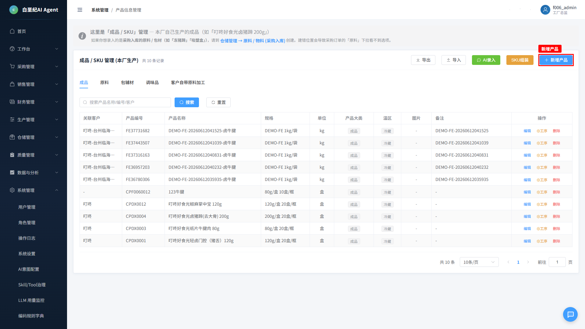
点击红框处的新增产品按钮，弹出新建产品表单：
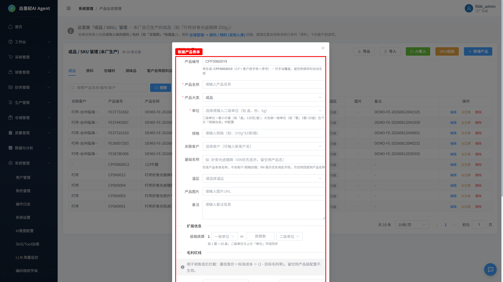
| 字段 | 填写说明 | 必填 |
|---|---|---|
| 产品名称 | 与生产纸保持一致，如"掌中宝卤猪蹄 200g" | 必填 |
| 产品大类 | 下拉选择，如"熟食类" | 必填 |
| 规格型号 | 如"200g/袋"、"500g/箱×10" | 必填 |
| 单位（一级） | 销售最小单位，如"袋"、"盒" | 必填 |
| 单位（二级） | 装箱单位，如"框"；换算：1 框 = 10 盒 | 可选 |
| 税率 | 9% 或 13%（税由工厂承担，影响销售订单报价底线） | 必填 |
| 产品图片 | 可上传实物照片 | 可选 |
六扇门所有物料（原料、包材、辅料、成品）使用 16 位唯一编码。编码规则在此统一维护，系统据此自动生成流水号，防止仓库出错料。
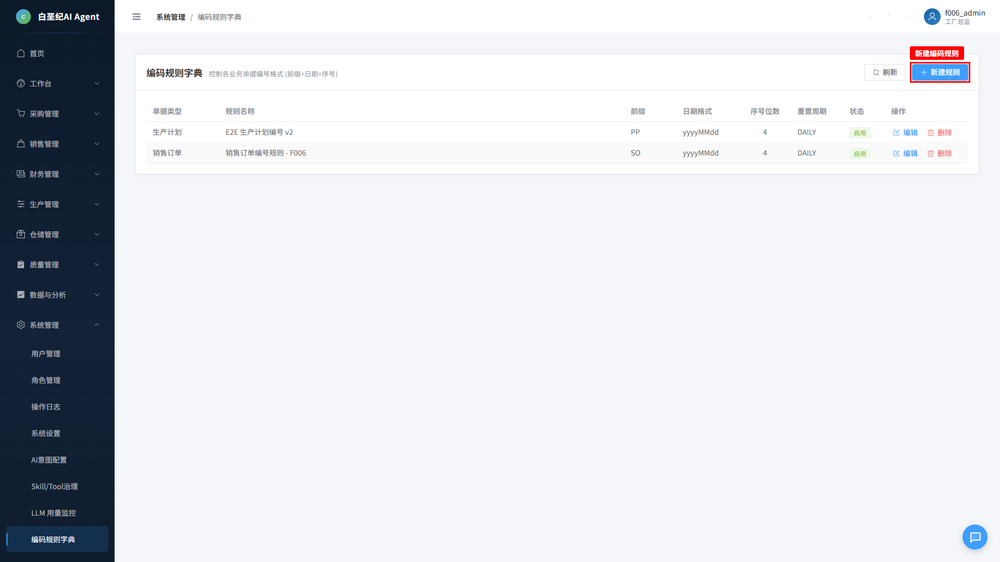
每个产品可绑定一套工序流程（如：领料 → 腌制 → 熟制 → 包装 → 成品）。工序像"积木"——全厂所有可用工序存在工序库里，配置时自由拼装，不用的工序不配置、不报工。
六扇门的约定：只报两个端点——领料（第一道）和成品/半成品产出（最后一道），中间工序暂时免报，减轻现场报工负担。
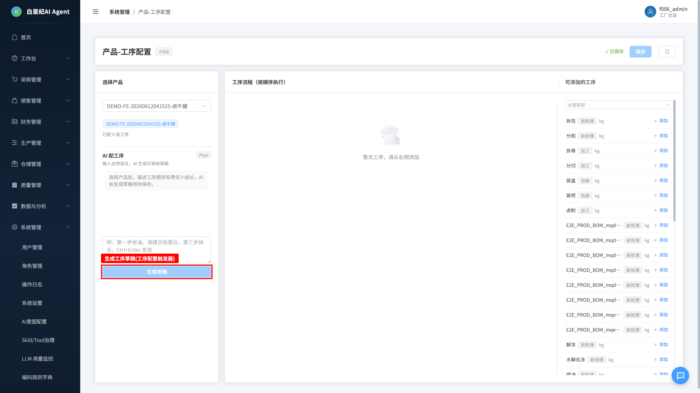
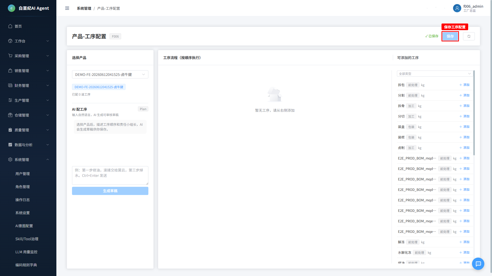
原料字典是所有物料（原料、包材、辅料）的总清单。单位字段决定入库和报工时的计量方式——六扇门原料以千克（kg）称重入库，BOM 配方中用克（g）为单位计算，出成率也基于此。
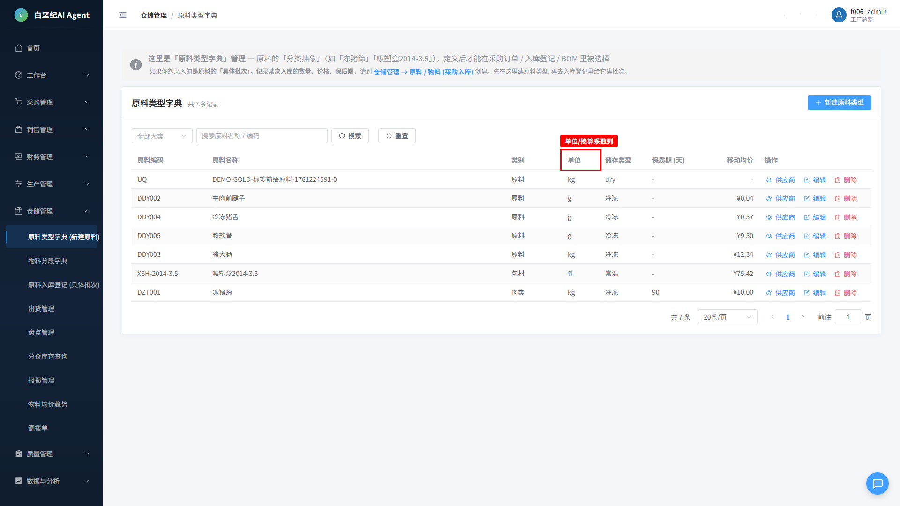
调料粉等配方固定的辅料按"份数"走，直接以成品份数折算用量，不需要复杂的配比管理。
BOM（Bill of Materials，配方）定义了每个产品生产所需的原料、辅料、包材及用量。出成率是核心参数——决定了领多少原料才能出多少成品，也是系统自动推算备料量的依据。
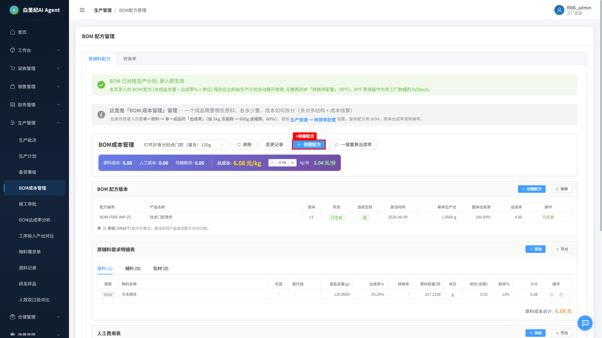
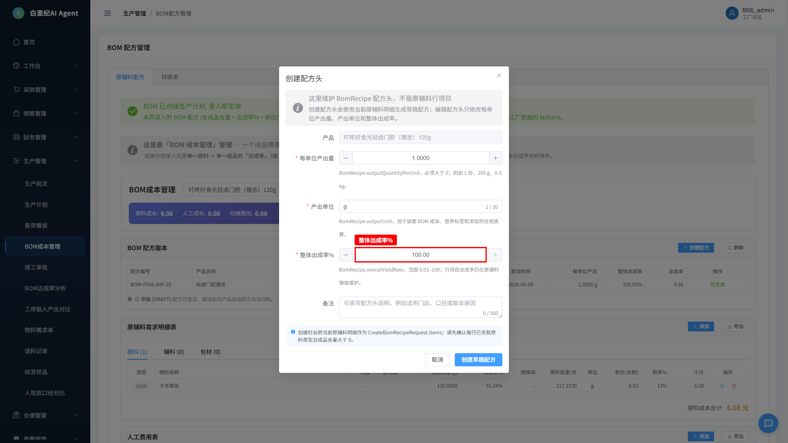
销售订单是整个生产链的起点。订单下达后，流转至财务审核，审核通过后才能排产。销售订单的单价和数量决定了本批次的毛利核算基础。
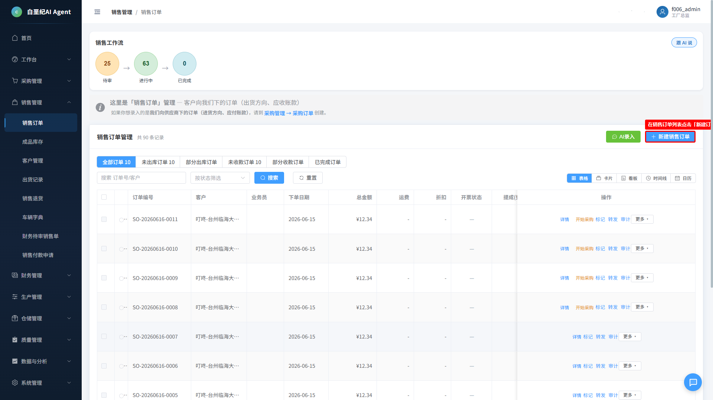
销售订单提交后，需要经过财务审核确认价格、客户资质、收款条件等。审核通过后，订单流转至生产计划排产阶段。
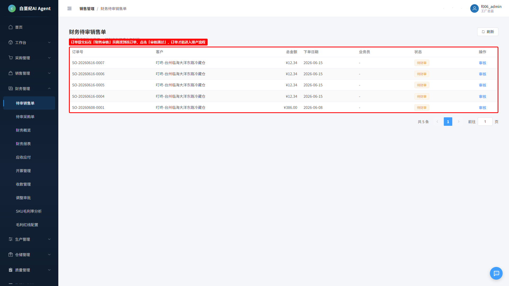
只有财务审核通过的订单，才能生成生产计划、排产、领料——确保每笔生产都有可盈利的订单支撑，避免先生产后发现亏损。
生产计划由生管（PMC）根据已审核的销售订单创建——规划哪天做哪个品、做多少数量。计划确认后，系统自动推算需要备多少原料（结合 BOM 出成率）。
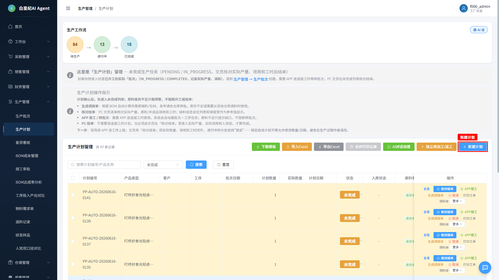
生产计划由厂长或生管（PMC）在系统中创建；车间操作员看到的只是分配到自己的批次任务，不需要关心计划层。
原料从主仓库发往车间是通过调拨单实现的。调拨由系统根据生产计划自动推送，也可以手动新建。车间只负责确认收料数量，不需要关心具体仓位。
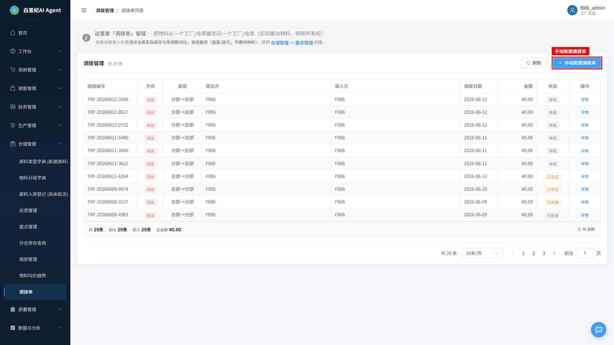
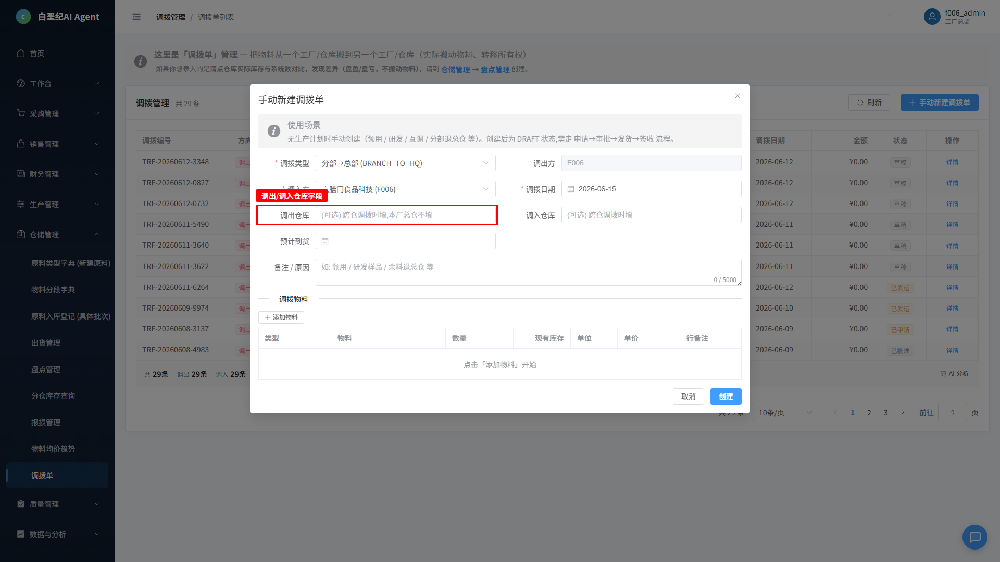
六扇门约定：统一晚上集中领料一次（而非边生产边领），仓库备好全天用料，整批发往车间。仓库发出的数量和车间实收数量会在系统中核对差异（如：仓库发 100 kg，车间清点收到 98 kg，差额 2 kg 需找原因）。
生产计划确认后，系统自动生成对应的生产批次。每个批次对应一次完整的生产过程（从领料到成品入库）。车间操作员通过批次列表找到自己的任务，进入批次进行报工。
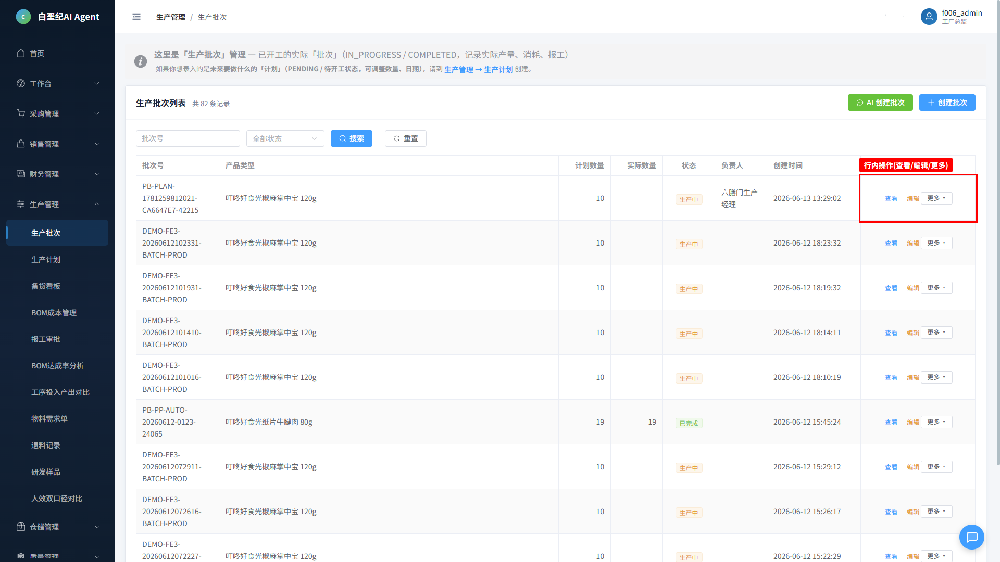
六扇门约定只报两个端点，中间工序免报：
中间的腌制、熟制、焯水等工序暂不在系统中逐道报工，由操作员线下记录。
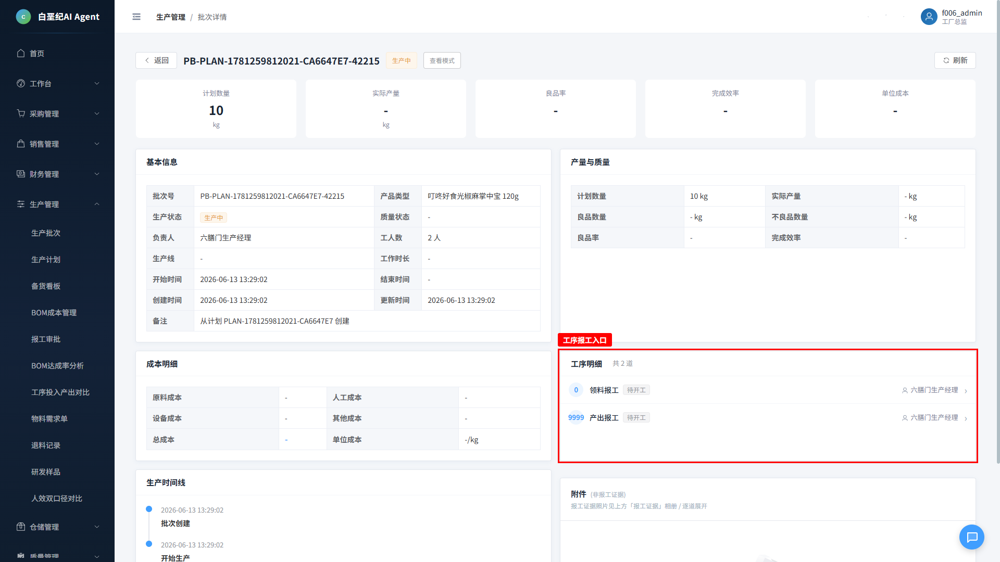
领料报工（第一端点）步骤：
产出报工（第二端点）步骤：
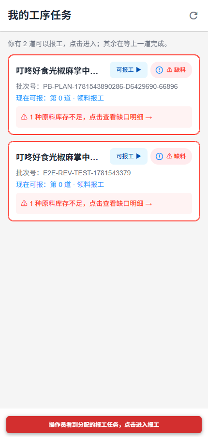
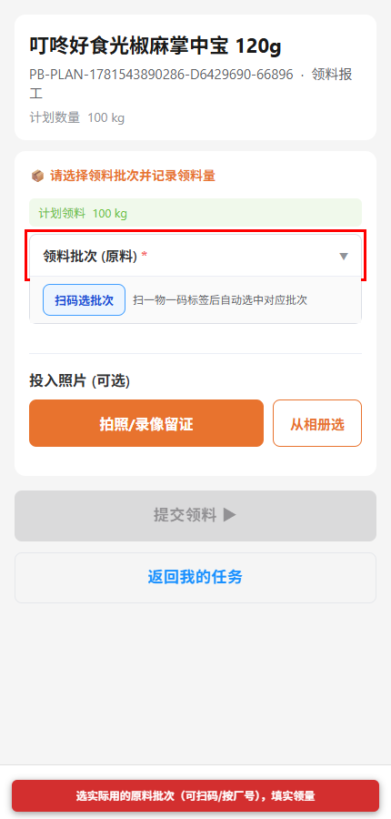
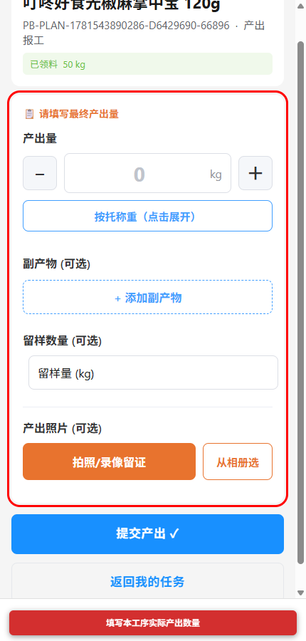
当批次的所有报工工序全部完成（2/2 道报完）后，页面会出现蓝色「完工入库」按钮。点击后，成品从车间仓转入成品库，生产闭环完成。
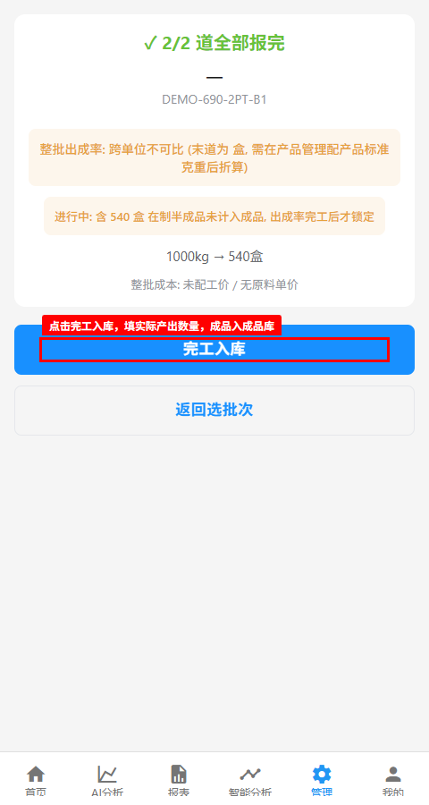
入库数量可能与产出报工数量有轻微差异（如称重精度、包装损耗等）。系统会以此计算最终出成率，并更新 BOM 历史均值，使下次备料预测更准确。
完工入库后，成品记录出现在成品库存页。仓管在此核对实物库存与系统数量，准备出库发货。
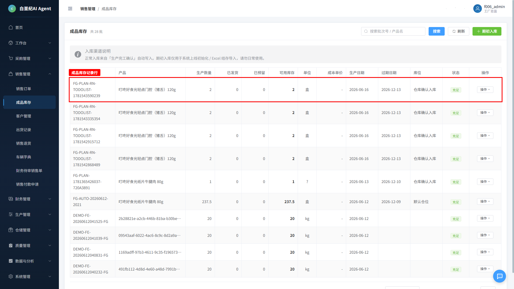
成品入库后，在批次详情页可查看本批次的实际成本核算结果：
如果某批次成本偏差超标，管理人员会当天审查原因（领料超量、出成率偏低等），当天发现当天处理，最多追溯到前天，超过三天不再追溯。
| 角色 | 主要操作 |
|---|---|
| 销售 | 创建销售订单、填写单价 |
| 财务 | 审核销售订单、核实价格/税率/毛利 |
| 厂长/生管(PMC) | 创建生产计划、排产、审批调拨 |
| 仓管 | 确认调拨（出库/入库）、成品出库 |
| 操作员 | 手机 APP 报工（领料 + 产出两点） |